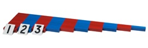
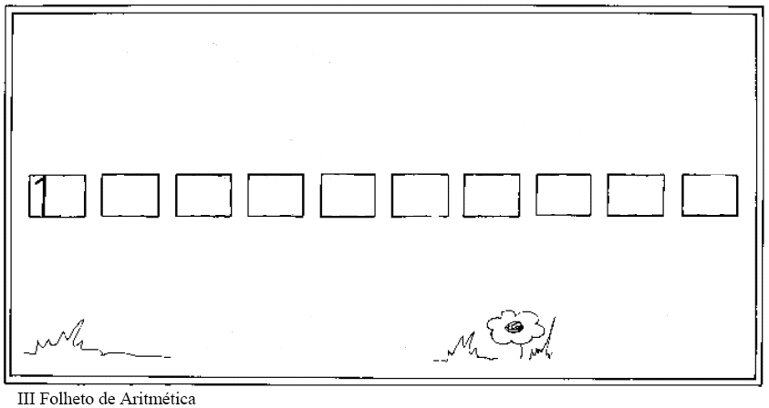
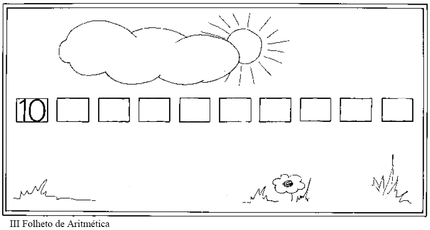

Ficha de Prática 1
Miniaturas das\Barras Vermelhas e Azuis & Numerais
 
Usando um tapete, coloque de um lado as Barras Vermelhas e Azuis desordenadas.
No outro lado, os numerais também desordenados.
Organize todas as barras em ordem crescente.
Relacione todos os símbolos numéricos às Barras.
Pegue o 2º Folheto e escreva os numerais em ordem crescente
Fonte: Apostila “Desenvolvimento da Mente Matemática 2” – Talita de Almeida - Presence Editora
Ficha de Prática 2
Miniaturas das Barras Vermelhas e Azuis - Numerais - Folheto

Usando um tapete, coloque de um lado as Barras Vermelhas e Azuis desordenadas.
No outro lado, os numerais também desordenados.
Organize todas as barras em ordem decrescente.
Relacione todos os símbolos numéricos às Barras.
Pegue o 2º Folheto e escreva os numerais em ordem decrescente
Fonte: Apostila “Desenvolvimento da Mente Matemática 2” – Talita de Almeida - Presence Editora